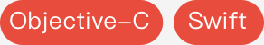

简历
基本信息
姓名：王文臻
性别：男
年龄：25
电话：15757857266
Email：wwzmzs@gmail.com
WeChat：susnm1993
工作经验：2年
学历：本科
期望薪资：9k～14k
工作性质：全职
到岗时间：目前离职，随时入职
GitHub：https://github.com/susnmos
专业技能

- 熟练 MVC、MVVM、代理、单例、观察者等常用设计模式以及KVO、KVC等机制
- 熟悉 OC 的 runtime 的运行机制和内存管理机制
- 熟悉网络处理、多线程及数据存储
- 熟练使用 AFN、MBProgressHUD、SDWebImage、YYModel、Realm 等第三方框架
- 熟悉 TCP/IP 通信机制，熟悉 json/xml 解析，具有网络编程经验
- 具有丰富的手机架构设计经验和性能优化经验，熟练掌握各种性能分析工具
- 熟悉 Git、SVN 源代码管理器
- 熟悉 Instruments、Reveal、Charles、Sketch、SourceTree 等开发辅助软件
- 熟悉 Quartz2D 和 Core Animation
- 拥有良好的封装和面向模型开发的思想,编程基础扎实, 具备良好的编程习惯，最近在玩耍面向协议编程的思想
- 熟悉 Swift 语言
项目经验
WXHook - 微信辅助插件
详情介绍：WXHook
主要功能：
- 红包记录，查看今日红包收支情况
- 转发文字、图片、视频类型的信息
- 转发时可以自动屏蔽信息来源者
- 截图时快速转发好友、朋友圈
- 聊天窗口长按房间名时快速截图，并分享好友、朋友圈
- 朋友圈消息转发
- 发送消息时，连续输入空格快速换行（可自定义设置空格数）
- 导出群图片、视频到文件路径/var/mobile/tmp/WeChat
- 自定义步数( 可使用命令给自己发数字 )
- 消息防撤回
- 使用Safari浏览Text Message内的链接
- 防越狱检测（可使用指纹支付功能）
- 快速清空未读信息的红点提示（强迫症福音）
- 快速清空公众号的推送记录
项目名称：沉香会
项目时长：2016/05 – 2016/09
开发人数：两人开发
公司：上海英智信息科技有限公司
项目描述：
是一款致力于打造品质生活的 App 平台,主要分为两个部分:新闻部分和商城部分,主要的功能是新闻类阅读,主要功能模块包括首页新闻阅读,私房尤物,用户登录,购物车,收藏和设置等模块功能。首页新闻主要包括当天热点的新闻事件，新闻详情是当前新闻的具体内容，新闻详情里面主要分享功能，评论，收藏等功能。
责任描述：
独立完成整个项目的多个模块。里面包含了药店、我的文件模块。
主要技术：
- 通过继承，MVC 的设计模式达到快速扩充模块的目的；
- 通过 UICollectionView 实现新闻界面的滑动，并且可调整新闻详情的字体大小；
- 使用 JSONModel，NSJSONSerialization 解析 JSON 文件转换为模型数据；
- 集成支付宝和微信支付；
- 利用 WebView 实现 OC 与 JS 进行交互；
- 通过 NSFileSize 计算缓存文件的大小，NSFileManager 清除文件缓存；
- 实现第三方登录。
主要职责：
- 整体的框架搭建设计；
- 代码的编写；
- 负责本项目 UI 设计和后台开发接口沟通。
项目名称：护康网
项目时长：2015/11 – 2016/04
开发人数：两人开发
公司：上海英智信息科技有限公司
项目描述：
护康网为公司自营项目，是一款基于人体相关数据指标的，有些非变化数据，如遗传，习惯等数据，可以通过填写提交给模型计算，有些缓慢变化数据，如身高，体重等数据同样可以通过不定期更新提交给模型计算，但是很多需要实时监测或者快速变化的数据，那就需要通过可穿戴设备实时提供数据，如血压，计步等的全智能人体健康监测模型。
主要技术：
- 以 UITabBarController 和 UINavigationController 为主要管理控制器来搭建程序的主框架，在根据不同的显示内容来确定子控制器，使用MVC模式使层次结构更加清晰；
- 使用 Core Graphics 实现 Cell 的圆角图标效果；
- 使用 AFN 第三方框架封装网络请求，创建网络请求工具类提供接口方便调用，对请求参数和请求结果模型化，因为异步请求采用 block 回调机制将请求回的内容刷新到控制器的 View 上。
- 使用第三方图片处理框架，处理网络图片的下载和缓存到本地；
- 自定义了键盘的工具条方便用户对键盘进行相应的操作。
项目职责：
- 框架搭建设计；
- 代码的编写；
- 负责本项目 UI 设计和后台开发接口沟通。
项目名称：利民出行客户端
项目时长：2015/07 — 2015/11
开发人数：两人开发
公司：上海宏满实业发展有限公司
项目描述：利民出行网是一款专门为海南提供的一款打车软件，主要功能模块有首页百度地图模块，移动地图可获取用户当前位置，立即叫车、代人叫车和预约用车三个打车模块，主要用于用户叫用的代金劵，可以添加企业账户以及开发票等等；支付功能模块，主要包括可以使用代金券支付，企业共享额度支付，钱包余额支付，支付宝支付，Apple Pay，银联支付，微信支付，判断用户是否用 POS 机支付等相关支付功能。
主要技术：
- 利用第三方框架 (MJExtension) 实现字典数据转模型数据；
- 使用第三方框架 (SDWebImage) 对图片的异步下载与缓存；
- 使用第三方框架百度地图开放 API 进行定位和周边车辆数据查找；
- 使用 Block 封装网络请求工具类；
- 集成了支付宝、微信。Apple Pay 等支付功能；
主要职责：
- 主框架的设计与搭建；
- 负责代码的编写
因为Apple爱上编程，因为编程爱上技术
我作为果粉买的第一台手机就是 iPhone 4，因此接触到了越狱，作为一个理工男，应该都喜欢搞机吧。所以开始在 cydia 上把玩各种 tweaks，从而对逆向产生了浓厚的兴趣，想研究这些 tweaks 是怎么实现的。目前有上架BigBoss的插件WXHook，在我看来逆向别人的app是一个促使自己进步的途径。
后来逐渐发现，想要了解逆向工程，必须要从正向、开发 App 出发。所以我从学习 Objective-C 开始，走上了 iOS 开发的道路。
我始终相信，一个人可以走多远是由他的初心决定的。兴趣所致，一定可以走的更远。希望有机会在贵公司的领导下走的更远。